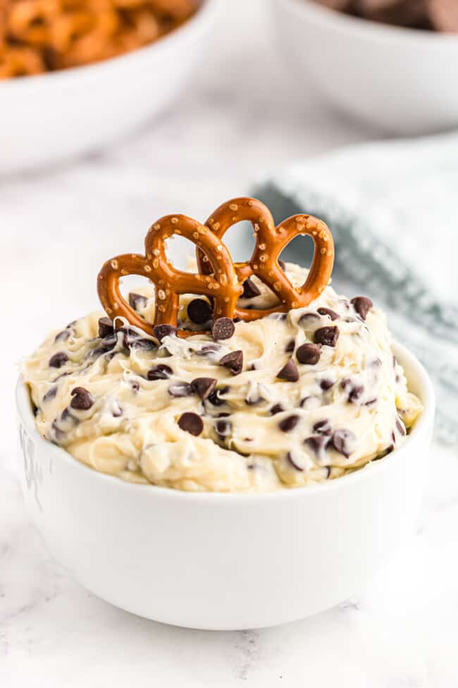

Cookie dough in dip form! Made with cream cheese and chocolate chips, this dream, creamy Cookie
Dough dip is whipped up in a flash. Servie with pretzels, graham crackers, anything really!
Ingredients:
- 1/2 cup unsalted butter
- 8 ounces cream cheese
- 1/4 cup powdered sugar
- 1/4 cup brown sugar
- 1 teaspoon kosher salt
- 1 cup semisweet mini chocolate chips
Directions:
- In the bowl of a stand mixer fitted with the paddle attachment, beat the butter, cream cheese,
sugars, vanilla, and salt on low until smooth, about 2-4 minutes
- Fold in the mini chocolate chips until evenly distributed in the dip
- Serve with dippers like pretzels, green apples or chocolate graham crackers, waffle cones, or get
really wild and try a sweet and salty combo with corn chip dippers!